class: center, middle .title[One weird trick to break *structure*] .subtitle[*Derived allele frequencies and the accurate inference of ancestry*] 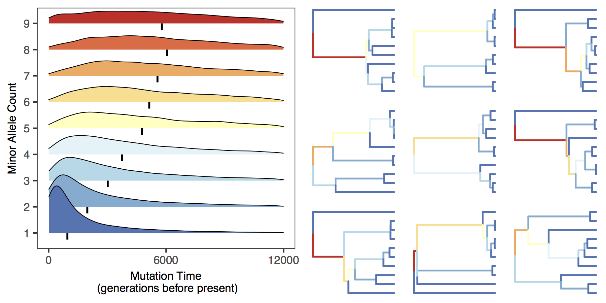 .author[Ethan Linck and CJ Battey] ??? Thanks for the introduction! Today I'm going to be talking about what we can learn from --- class: center -- <img style="width:100%" src="../figures/pops-01.png"> ??? Nonrandom mating and ancestry among individuals will lead to population subdivision or structure within a given species. Identifying and characterizing these patterns is a fundamental goal of population genetics and evolutionary biology more broadly, and drives the machinery behind personalized DNA testing companies such as 23 and me. But is also increasingly important to understand and correct for population genetic structure in a broad range of downstream applications, such as genome-wide association scans to identify genetic variants associated with particular phonetypes. --- class: center -- 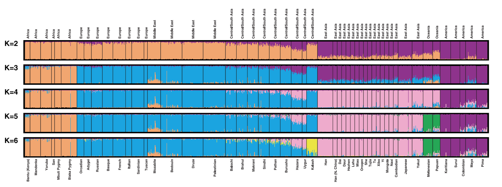 .right-column[(Rosenberg et al. 2002)] ??? One of the oldest and certainly the most influential methods of detecting subdivision is the Pritchard-Smith-and-Donnely model, better known by its associated software model structure, which has wracked up over 22,000 citations since its publication in 2000. The PSD model is one of those truly elegant scientific ideas that seems simple in hindsight: using a sample of individuals with multiple unlinked genetic loci, it attempts to find a scheme of groups or clusters of individuals that maximizes Hardy-Weinberg Equilibrium within each, with the wrinkle that individuals may have ancestry contributed by multiple populations. The output is a matrix of N individuals by K populations, filled in by proportions of ancestry. It's usually visualized by these ubiquitous plots, where each bar is an individual and each color is a population, allowing you to easily pick out patterns of admixture. --- class: center -- 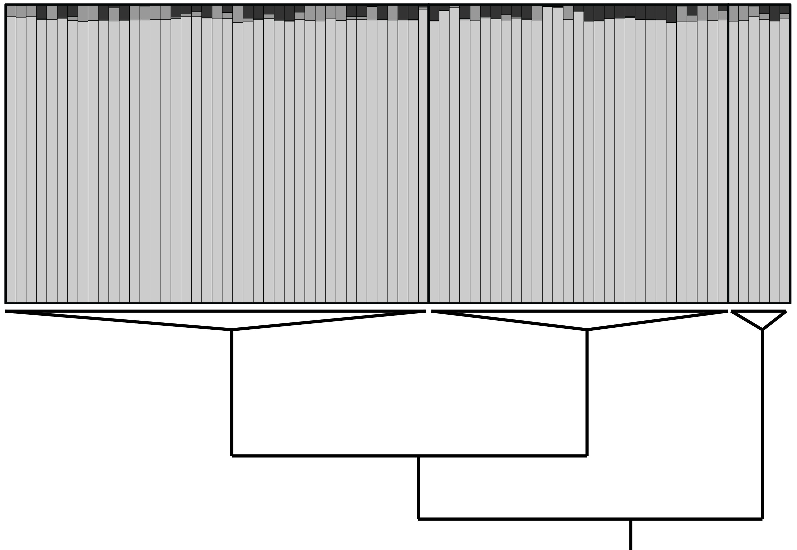 .right-column[(adapted, Mason and Taylor 2015)] ??? But like any model, and especially like any very simple model, structure doesn't necessarily work well in all scenarios. If you've ever played around with it, there's a good chance you've run into a problem like this, where you have some a priori reason to believe there's significant subdivision in your dataset, but structure responds by assigning the vast majority of each individual's ancestry to a single population, producing a pattern I'll refer to from hereon out as "the smear." In our lab we use structure and its analogs quite a bit, and have been repeatedly frustrated by smear, which has motivated a desire to understand why it's happening. --- class: center -- 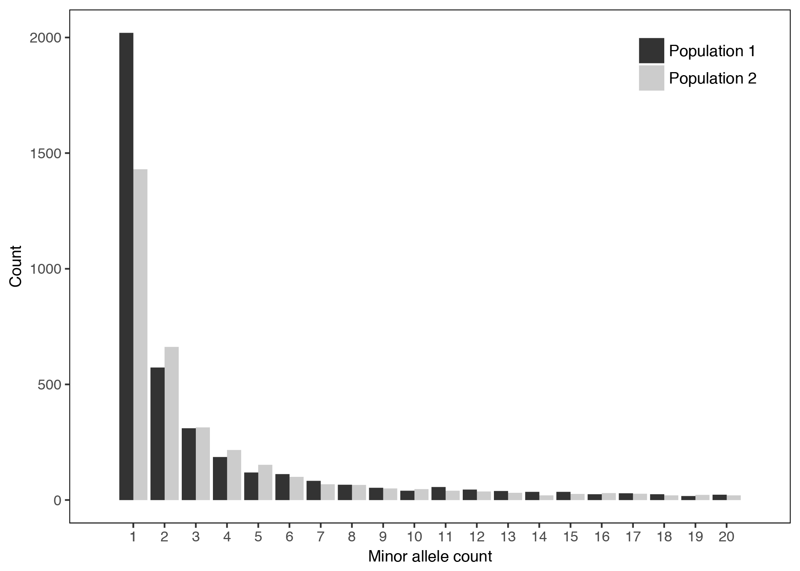 ??? We knew from experimentation that how structure performed could be affected by how you filter the site frequency spectrum, or SFS, of our data. The SFS describes the frequency distribution of genetic variants in a given sample: in this example I've plotted the spectra of two populations, with the X axis classifying variants by how many individuals in a population they are found in, and the Y axis illustrating how many total variants in the genome fall in to that particular bin. Because high throughput DNA sequencing can have high error rates, it's common to lop off the first bar on this figure -- the singletons, or sites where a given variant is only found in a single individual. But many studies go further, dropping sites only shared by two, three, or four individuals as well. --- class: center -- 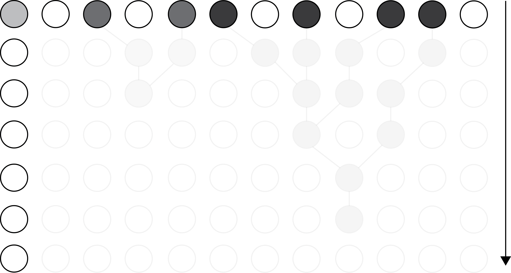 ??? Population genetic theory tells us that this will have a nonrandom affect on the information content of your data. Intuitively, an allele found in a single individual likely to be a recent mutation. --- class: center -- 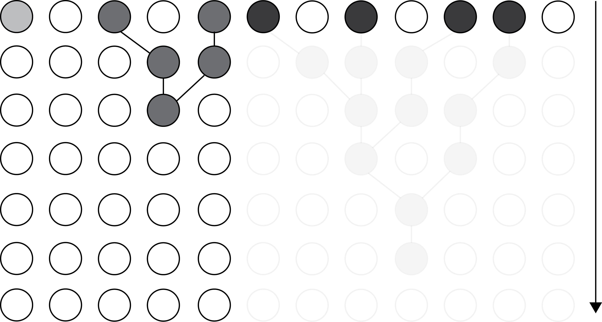 ??? Where as alleles found in an increasing number of individuals likely an increasing number of generations before the present. --- class: center -- 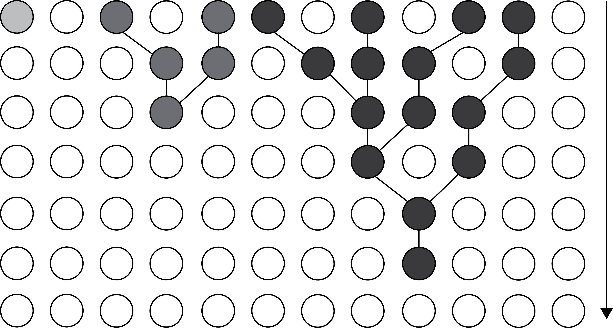 --- class: center -- ??? Here are the results of coalescent simulations demonstrating the same point across a broader range of the site frequency spectrum. The righthand part of the plot shows the density of mutations at a given generation before the present across multiple allele frequency classes, while the lefthand part of the plot shows a random sample of coalescent trees with branches colorcoded by their mean mutation time. Again, the takeaway is that more common alleles are likely older. --- class: center -- .title[Can we break *structure*?] -- .title[Can we learn anything from breaking it?] ??? So for this study, we wanted to know whether we could manipulate the site frequency spectra of our data to reproduce the smear pattern in a predictable way, with the goal of understanding when structure was appropriate for our data, and when it wasn't. --- class: center -- 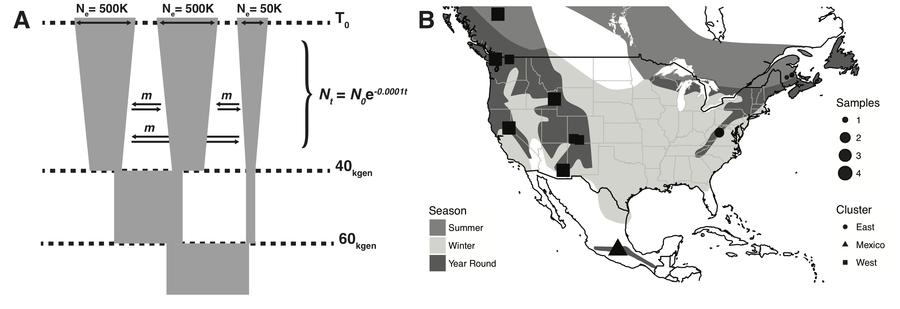 ??? Because we wanted understand whether natural biological processes could lead to scenarios where structure could fail, not just sequencing errors or artifacts from assembling sequences, we simulated genetic data for forty individuals. But because the potential parameter space for unique population histories is essentially infinite, we decided on a demographic model that closely approximated what we knew about the population structure of a widespread North American bird, the golden-crowned crowned kinglet, and used it as an empirical counterpoint. We then iteratively applyed increasingly strict filters for the minimum minor allele frequency permited on both our dataset, running the program structure multiple times for each. --- class: center -- 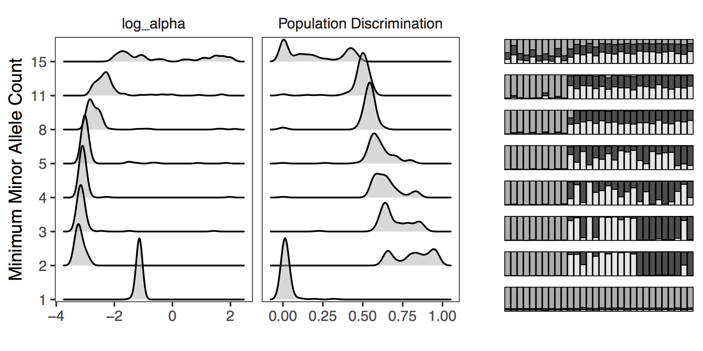 ??? What we found was that including singletons in our dataset almost always lead the program to fail to identify the actual structure of populations -- and that applying overly strict filters that got rid of the majority of low frequency alleles often caused it to fail as well. Here you can see the results from our simulated data, with the left hand part of the plot showing changes in the log value of the admixture proportion of each individual and the accuracy of population discrimination across different minor allele frequency threshholds, with the righthand part of the plot showing representative structure results. --- class: center -- 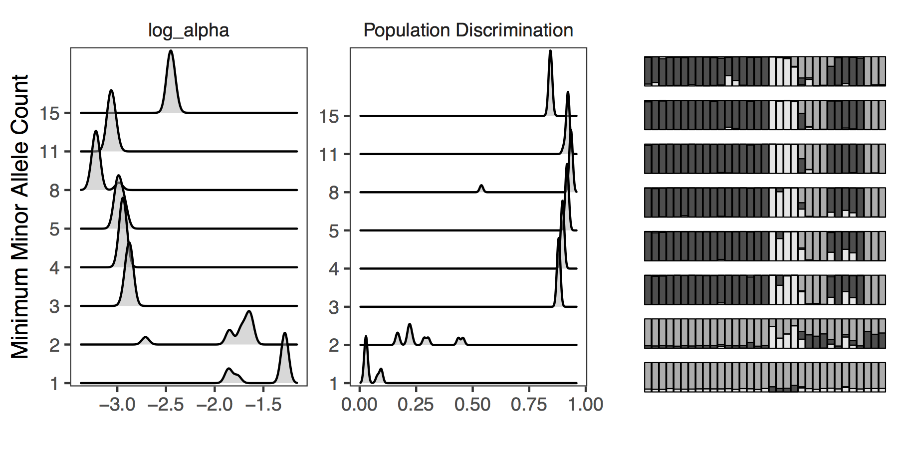 ??? Our empirical data closely matched our simulation study, albeit with a bit more noise. --- class: center -- <img style="width:80%" src="../figures/novembre2008a.jpg"> .right-column[(November et al. 2008)] ??? So far, so good, or perhaps so bad: we could cause structure to fail in predictable ways. But to understand why it was happening, we wanted to have a point of comparison; a way to separate universal qualities of sequence data from the peculiarities of the PSD model. So we also inferred population structure using principal components analysis coupled with k-means clustering and discriminant analysis of principal components. I'm sure we all use PCA so I won't get into the details, but it differs from structure most importantly in being nonparametric -- there's no underlying model for optimal allele frequency distributions; it just decomposes genotypes into synthetic axes that account for the lion's share of variation, and then finds the best clumps of individuals within this N-dimensional space. Because the method shouldn't weight variants with little information on subdivision very highly, you'd expect it to be less sensitive to filters on the site frequency spectrum. --- class: center -- <img style="width:100%" src="../figures/mvclust_ridgeplot.png"> ??? ...and that's exactly what we see. For both k-means and DAPC approaches of identifying populations from individuals in PC gentoype space, there's very little change in discrimination ability or accuracy as you apply the same set of increasingly strict filters. This suggests that structure's frequent failure when singletons are included is related to the inability of the PSD model to handle these data. We suspect it's because structure doesn't explicitly model mutation. Because it assumes each unique allele in the input dataset has a distinct frequency in its parent population, recent mutations – e.g., derived alleles – are erroneously treated as representative of a separate population-specific allele frequency profile rather than as descendants of ancestral copies. --- class: center -- .right-column[(adapted, Mason and Taylor 2015)] ??? You can probably see how this could lead to overfitting: a population k1 receives an allele frequency distribution averaging out true population specific-frequencies of common alleles, resulting in the broad band of majority ancestry visible here. Subsequently, populations k2...kn receive high frequencies of singletons or otherwise uninformative rare alleles, resulting in the additional bands of minority ancestry shared across all individuals. We were happy enough with this result. But after we posted a preprint of a manuscript writing up this work, a commenter made the point that the decay in accuracy we start seeing again at really strict MAF filters might just be related to the loss in the total number of loci we include in the dataset, rather than anything to do with the mutation time of different allele frequency classes. So we went back and simulated longer sequences, then subset them so that we could hold the length of sequence constant as we applied increasingly stringent filters. --- class: center -- 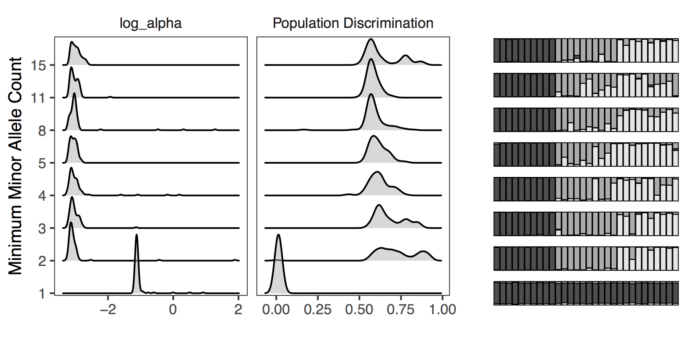 ??? And as it turns out, it looks like sequence length is probably the primary driver of this secondary pattern, though it is unavoidable with real datasets. --- class: center -- 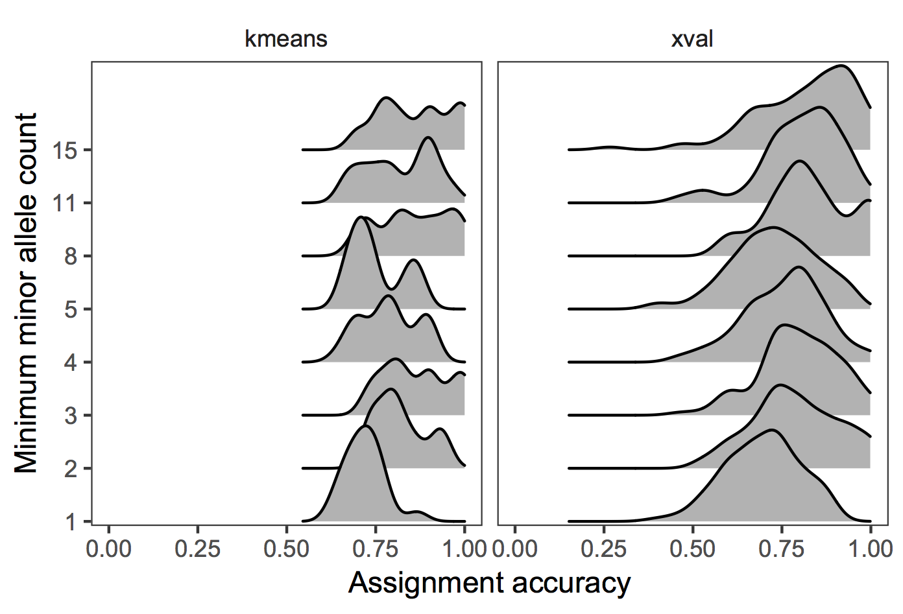 ??? ...while once again, PCA-based approaches seem unaffected. --- class: center -- .title[*structure* breaks with singletons] -- .title[models are simple, popgen is complex] ??? So in conclusion, we *were* able to break structure in a predictable way, and I like to think it taught us something about how mathmatical models that insufficiently describe biological processes can cause erroneous conclusions, no matter how useful or flexible. More concretely, we're able to make a few recommendations -- always drop singletons, and always check your results with a non model-based alternative. --- class: center -- ??? ...and with that I'd like to thank supporting institutions and funding agencies, our advisor John, and especially Andy and Dave for helping us think through some of these issues.